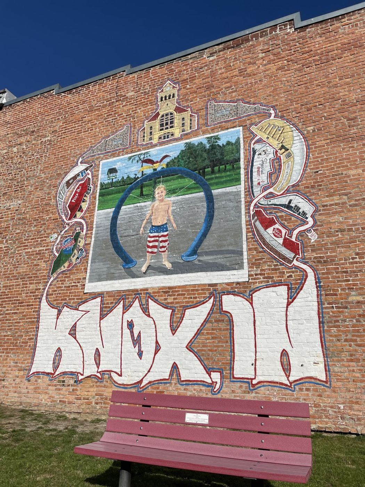
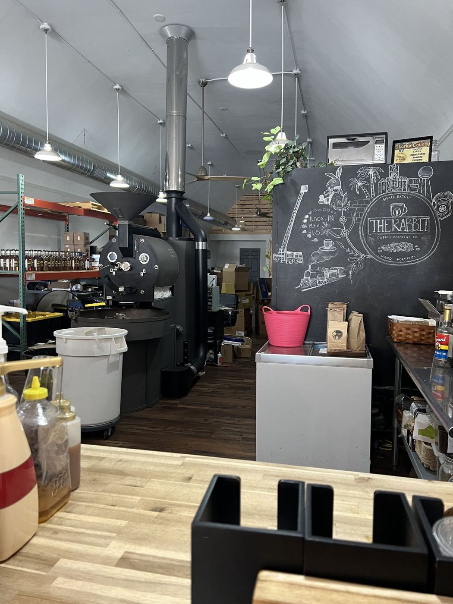
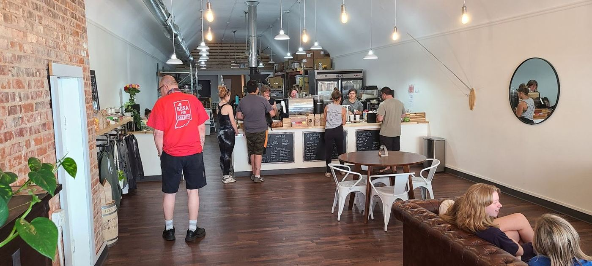
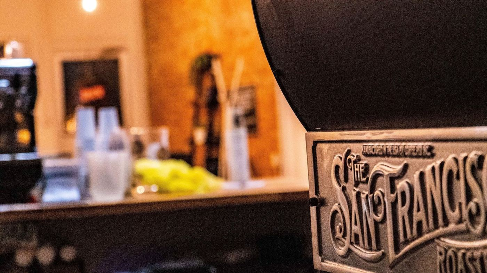

Rabbit Coffee Roasting Co.
The menu
Whole bean, lattes, cold brew, smoothies and a few treats.
Whole bean by the pound
Take home freshly roasted beans, espresso included.
Lattes & cold brew
Mocha lattes and a cold brew caramel latte with a smooth finish.
Smoothies
A Saturday-morning favorite with local families.
Treats & Built bars
A small selection of treats. Sugar-free syrup is available.



